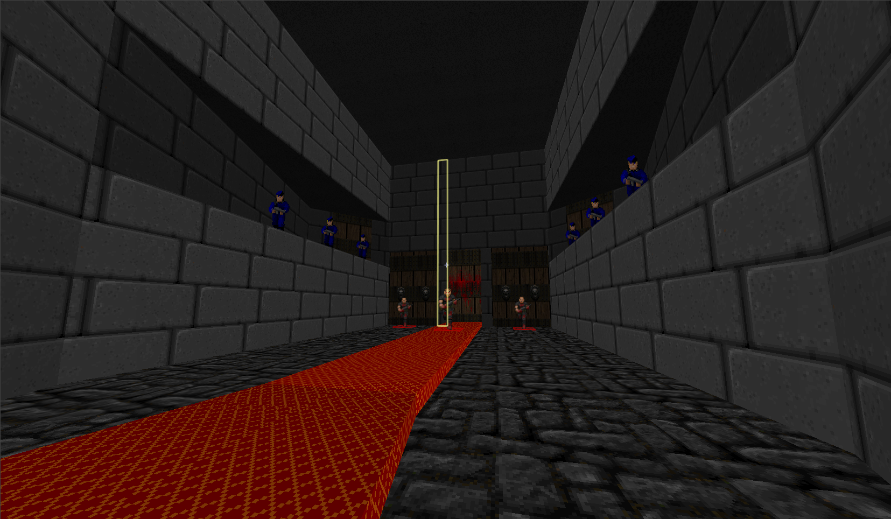

Much like one of my Quake levels, this was a way to help me understand how to design levels, from concept to completion.
TheChallenge.wad
Also known in-game as 'MMM 3'
A DOOM Wad I made to learn how Level Design works
Wanna see a certain bit of my work?

The process of creating the DOOM WAD
The first thing I did when I was creating this WAD was thinking of what levels should be like. Should they be conventional DOOM-styled Levels? Should they take on some themes from DOOM's successor, Quake? How would any of the styles work? In the end I decided to do generally Castle theming, taking on (only partially) the darker, aged feeling of the levels in Quake.
When working on levels, the toolset felt complex, but as time continued, working with the tools got easier. The game is sector based, meaning I had to decide what a certain area did, as opposed to adding something like a trigger box down. This made it a little bit more challenging to get what I wanted done, but as with the tools themselves, the more I understood it, the better I got at using it.

The first version of the castle interior had grey bricks rather than the red bricks. The pillars seen in the final version are also missing. It was about the time when I next added the pillars when I did the brick texture change and the map itself started coming together into its final version.
Level 1 Top-Down Map

This top-down version of my map is one of approx. 10 or so levels that were designed. All maps are playable in UZDoom, and files can be seen if you use SLADE.
This was the predecessor to Qarsqe, the map I had made in Quake to learn more advanced tools.